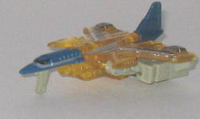
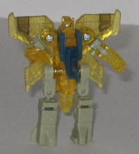
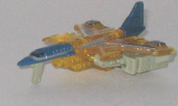
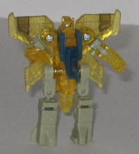
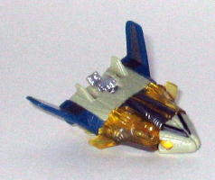
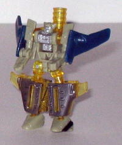
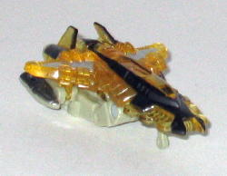
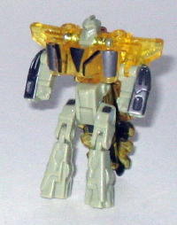
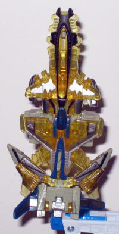

Scattor
Scattor
 
Difficulty of Transformation : Easy
Color Scheme : Light brownish gray, dark flat navy blue, transparent yellow, and some silver, gunmetal, and black
Individual Rating : 7.0
Energon
Saber Team
Allegiance
: Minicon
Size
: Basic (Mini-Con 3-pack)
Team Gimmick
: Ability to combine
into the
Energon Saber
sword
Overall Rating
: 6.1
(NOTE: Because this set is a repaint, this
is not a full-blown review. This mainly covers any changes made to the
mold and the color scheme, and merely compares it the Air Defense Team.
For a review on the mold itself, read the review of the Air Defense Team
here
.)
Scattor


Difficulty of Transformation
: Easy
Color Scheme
: Light brownish gray,
dark flat navy blue, transparent yellow, and some silver, gunmetal, and
black
Individual Rating
: 7.0
Scattor is a remold of
Armada Jetstorm, and, like the other Energon Saber remolds, it's an aesthetic
remold to a part of his vehicle mode; nothing articulation-related or anything
like that has been changed, so in those respects, he's like his previous
mold versions. Scattor is a futuristic-style jet with four butterfly-like
wings. It's actually very cool-looking. The detailing on those parts is
also pretty mecha-futuristic, too, so it adds wonderfully to the whole
flavor Scattor has going for him. The butterfly wings also work great in
his robot mode, too; it looks like Scattor's got a pair on insect wings
on his back that he can flutter instead of just triangular straight plane
wings. The color scheme also works fairly nice, too, although I would have
perhaps changed the brownish-gray to a more solid gray. The transparent
yellow "non-aligned" Energon plastic used for the main body is also a nice
touch.
Skyboom


Difficulty of Transformation
: Very
Easy
Color Scheme
: Light brownish gray,
transparent yellow, dark flat navy blue, gunmetal, and some silver and
black
Individual Rating
: 7.6
Skyboom, a remold of
Armada Sonar, has probably the least significant remold out of the three
Team members. Basically all that's been done to him mold-wise is the addition
of another small pair of wings nearer to the front. They look pretty nice,
but the futuristic detailing used on the transparent bits on the center
are directly in contrast to the "just modern" detailing on the rest of
Skyboom. It just doesn't mesh very well. The color scheme tends to work
fairly well, though- I have the same comments for it on Skyboom as I do
on Scattor.
Wreckage


Difficulty of Transformation
: Very
Easy
Color Scheme
: Transparent yellow,
light brownish gray, and some black, gunmetal, and silver
Individual Rating
: 5.8
Wreckage is the member
of the team that is a remold of Armada Runway. He also has the most extensive
remold- his vehicle mode is now almost entirely different- with a VERY
cool, "futuristic jet" look to it. I especially love the thin-windowed
cockpit and "mouth" intake valve near the front. I mean, the vehicle mode
just looks so awesome that it's easy to ignore all that undercarriage robot
mode junk (not to mention it does a slightly better job of covering it
up). However, the flip side to this is that in robot mode, the cockpit
jutting out from his butt is even larger and more distracting than before.
Still, it's a small price to pay for such an awesome vehicle mode. As for
the color scheme, again, I have the same comments here as I had with Scattor.
Energon
Saber

Difficulty of Transformation
: Very
Easy
Color Scheme
: Transparent yellow,
light brownish gray, dark flat navy blue, and some gunmetal, silver, and
black
Individual Rating
: 3.8
The Energon Saber certainly looks more solid and less fragmented than its predecessors, but it still barely resembles a sword. The colors and detailing are great, though, and I'd definitely prefer to put this puppy in a Transformers' hand over either of the previous Minicon Sabers. I especially like how Scattor's front wings semi-lock into place in between Skyboom's front shuttle halves. It makes the saber less likely to fall apart.
The Energon Saber Team is certainly an improvement over its predecessors, with improved sculpting on all and improved colors on most. Highly recommended if you don't have either of the previous versions of this Minicon Team; otherwise, only recommended after you get the Terrorcons and Omnicons.
Review by Beastbot